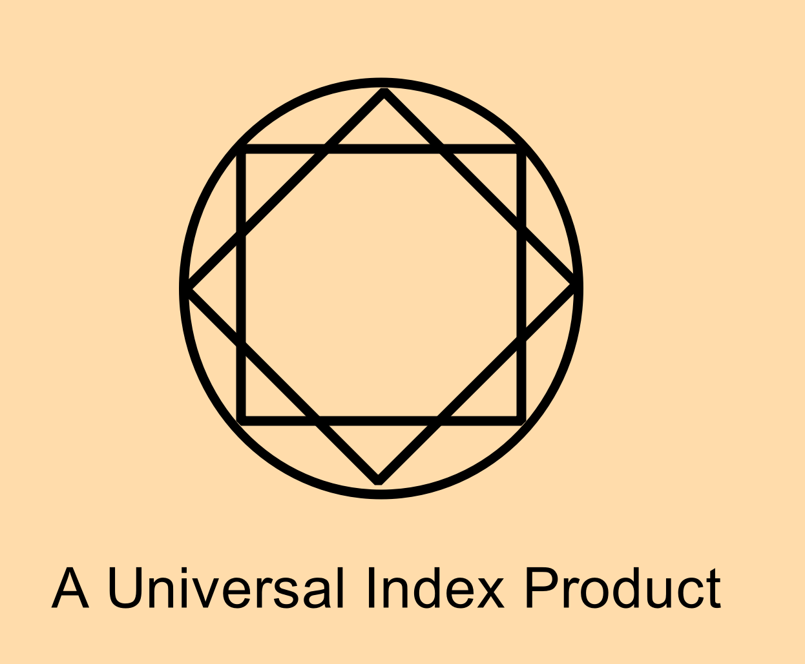

Standing Meditation
If you want to work more on the limbs, external aura and get comfortable with using energy while on your feet or outside, standing meditation is great.
Simply just perform your basic meditations while standing.
Detoxification and Energy Blocks
You will notice certain organs are blocked up and feel painful while cultivating, similarly certain areas of the body, joints, limbs, meridian channels or other things are difficult to feel and push energy through. This is called an energy block and you just have to work with it. Slowly, over days, months or even years it will dissolve. This also relates to real physical issues and internal organ deficiencies or problems as well. Look up a meridian chart and see which organ channel is not good for you. This will teach you your own organ health.
Similarly you may feel a bit ill after reaching a new level or some meditations.
When clearing out blocks, this releases a lot of toxic physical material and energy that has been stored there. Hence the circulation passes it through your body, making you feel sick.
Cultivation Ranks
Depending on the system which you follow will depend on what kind of levels or ranks you achieve. Some systems base it on how many of the 8 or 12 meridians you have opened. Others on what dan tien or three major centers or 7 chakras you have opened. Another can base it on how developed your external and internal energy is.
There are many different systems which vaguely relate to one another based on progress. I rank it somewhat like this.
0 - Basic meditation and physical training
1 - Being able to do energy meditations
2 - Being able to build an internal naval center
3 - Opening and developing of the external body and meridians
End Notes
Hopefully this book has served you well and you're able to develop your energetic and meditation ability. Just remember that continuous study and practice over many years will help you to understand this art. It is fairly different to the usual practices we're used to in mundane life so it may take some time to understand. Though, just keep at it and you'll be able to do it.
